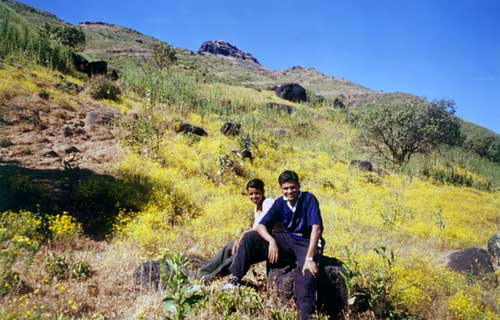
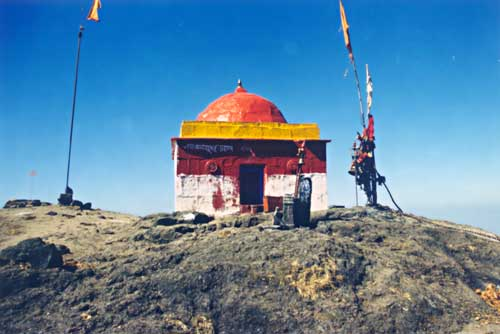
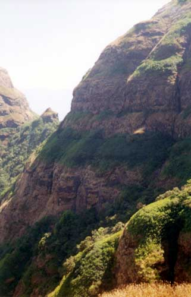
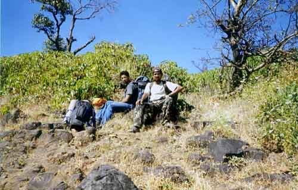
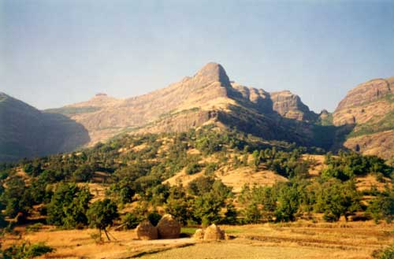
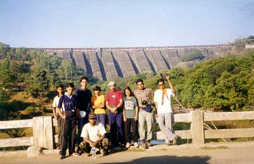

|
| Kalsubai from Bari village |
|  |
| we passed through beautiful medows of yellow flowers |
 |
| final streach : you can see the almost vertical ladder on the rock face |
|  |
| Roof of Maharashtra! The Kalsubai temple on top. |
 |
| The usual glory hunt :) |
|  |
| on the way to Panzare on the other side. Had to pass through karvi trees taller than us. |
|  |
| Sandeep and me take a rest : it was tough going. |
|  |
| From Panzare : Kalsubai on the left, we came down through the gully on the right. |
 |
| the gully we came down through : it was steep and tough. |
|  |
| The Bhandardhara dam in the background |